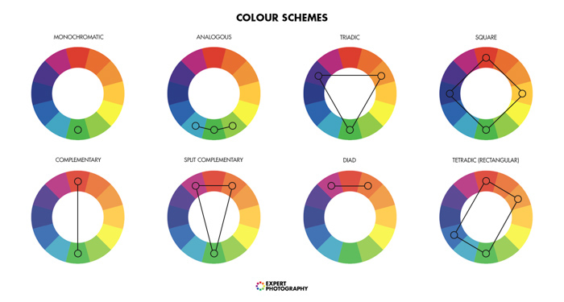

Dissecting Colors with Anzu
In this document I'll try to simply explain the basic color-theory. This includes the most common color-models, -types, -formats and schemes as used in (web-)design as well as art and painting.
Chapter 1: Color Types
The three most common color types are:
- Primary Colors
- Secondary Colors
- Tertiary Colors
Chapter 1.1: Primary Colors
Primary colors differ modern color models compared to older ones. There are usually three primary colors. As example for this chapter I will use the RYB color model because its the most universally known. RYB standing for red, yellow and blue.
| Primary |
|---|
Chapter 1.2: Secondary Colors
Secondary colors can be obtained through mixing two of the three primary colors as followed:
| Primary | Primary | Secondary |
|---|---|---|
| Red | Yellow | Orange |
| Yellow | Blue | Green |
| Blue | Red | Purple |
| Secondary |
|---|
Chapter 1.3: Tertiary Colors
Tertiary colors are colors that'll be created by mixing two secondary colors, a primary with a secondary color, or a fully saturated primary color with a half saturaed primary color. For the sake of simplicty I'll only write down the primary + secondary method.
| Primary | Secondary | Tertiary |
|---|---|---|
| Red | Orange | Vermilion |
| Yellow | Orange | Amber |
| Yellow | Green | Chartreuse |
| Blue | Green | Teal |
| Blue | Purple | Violet |
| Red | Purple | Magenta |
| Tertiary |
|---|
Chapter 1.4: Further Color Types
You can mix these color types even further and further to get quaternary, quinary, senary, septenary, octonary, nonary, denary colors and on and on.
A few examples of quaternary colors in the RYB color model:
| Primary | Tertiary | Quaternary |
|---|---|---|
| Red | Vermilion | Scarlet |
| Red | Magenta | Crimson |
| Blue | Violet | Indigo |
Chapter 2: Color Models
There are different models that define the color space through
different means. Stuff has to do with pigments and color mixing,
lightning, maths, adding light together, substracting light and
complicated stuff like that but I'll avoid going deeper into this
because it's rather complicated and not really relevant for what I'm
trying to explain here.
The most common color models:
- RYB - Red, Yellow, Blue
- RGB - Red, Green, Blue
- CYM(K) - Cyan, Yellow, Magenta (Key/Black)
- HSL - Hue, Saturation, Lightning
- HSV - Hue, Saturation, Value
Chapter 2.1: RYB Color Model
This is the color model that I used as an example above. It is the most well known and one of the oldest color models usually used for painting and art. Most people probably learned this in school. The biggest different to modern color models like RGB and CYMK is that it uses yellow as a primary color instead of green. I wont go furhter into this color model as it pretty much obsolete nowadays.
| Primary | Secondary | Tertiary |
|---|---|---|
Chapter 2.2: RGB Color Model
The main color model I'll use as an example from now on. Most web development uses this color model and its pretty much superseding the RYB color model. It's an additive color model, meaning you can add the primary colors together to get new colors. Mixing red, green and blue light you'll end up with a white light for example.
| Primary | Secondary | Tertiary |
|---|---|---|
Chapter 2.3: CYMK Color Model
There are actually two very similar color models: CYM and CYMK where
the latter one uses black in combination with cyan, yellow and
magenta to form all kinds of colors through substraction.
Mainly used in printing. Also based on the RGB color model.
| Primary | Secondary | Tertiary |
|---|---|---|
Chapter 2.4: HSL & HSV Color Models
I'll add these two color models together because they use pretty much the same approach. These are cylindrical color models, meaning the color is spread around in a circle with each degree representing a different color. Red being 0° and 360°, green being 120° and blue being 240°. Thats what is meant with Hue. I'll mainly talk about the HSL color model because its used a lot more then the HSV one. The s standing for saturation actually means the amount of gray in the color and the Lightning stands for the amound of white or black.
Chapter 3: Color Formats
Now we're getting to the fun part. I'll explain the typically used color formats in web development and how to use and understand them.
These are as followed:
- RGB (and RGBA)
- HEX
- HSL
Chapter 3.1: RGB Color Format
The RGB color format is literally just the RGB color model in
numbers. Its usally written like this in CSS:
rgb(255, 255, 255) or
rgba(255, 255, 255, 1) if you add the alpha channel.
The first number indicating red, second yellow, third blue. The
numbers range from 0 to 255. The highest being fully saturated. If
all the primary colors are at 255 the color will be white like
shortly explained with the lights above. All three at 0 being black.
And the alpha channel aka the fourth number being the opacity of the
color, 0 being transparent and 1 being opaque. There are a total of
16 million possible combinations.
Chapter 3.2: HEX Color Format
The HEX color format is just another way to use the RGB color model.
Your able to achieve the exact same number of colors with either the
HEX or RGB color format.
HEX works as follows:
It's typicall written like this #000000, a hashtag and
six numbers. The first two numbers indicating red, the second two
yellow and the third two blue. They span from 0 to 9 and after that
from a to f for a total of 16 different characters. That would look
like this written down in order: 0123456789abcdef with
f being the highest. Each color has two characters for a total of 16
times 16 combinations. That are exactly 256 just like with the RGB
format (counting 0). The exact half of ff would be 7f. (7 being the
8th number counting from 0, 16 divided by 2 is 8 so 8 times 16
equals 128 which is the exact half of 256)
Here are some examples how it works:
| Color | HEX | |
|---|---|---|
| Color | Name | |
| Black | #000000 | |
| Red | #ff0000 | |
| Cyan | #00ffff | |
You're also able to shorten HEX codes if both characters of a color are the same.
| Color | HEX | ||
|---|---|---|---|
| Color | Name | Full | Short |
| White | #ffffff | #fff | |
| Green | #00ff00 | #0f0 | |
| Amethyst | #9966cc | #96c | |
Chapter 3.3: HSL Color Format
This color format brings a few new terms into the mix.
Color Tone, Tint and Shade.
The format is written like this:
hsl( 120, 100%, 50%) with the example being the color
green.
The first value controls the Hue, like explained above its a
circluar approach with every degree being another color. The second
number controls the tone of a color, in other words the amount of
gray. 100% being a fully saturated color and no gray in it. The
third number controls the lightning, 50% being neutral. Everything
above 50% adds white to our color to get different tints and
everything below 50% adds black and we end up with different shades.
| Hue | Saturation | Lightness |
|---|---|---|
Chapter 3.4: Color Examples
Here I'll show you all primary, secondary and tertiary colors
together with their differen color formats.
| Color | HEX | RGB | HSL | |||||||
|---|---|---|---|---|---|---|---|---|---|---|
| Color | Name | Type | Full | Short | Red | Green | Blue | Hue | Saturation | Lightning |
| Red | Primary | #ff0000 | #f00 | 255 | 0 | 0 | 0° | 100% | 50% | |
| Orange | Tertiary | #ff7f00 | 255 | 125 | 0 | 30° | 100% | 50% | ||
| Yellow | Secondary | #ffff00 | #ff0 | 255 | 255 | 0 | 60° | 100% | 50% | |
| Chartreuse | Tertiary | #7fff00 | 125 | 255 | 0 | 90° | 100% | 50% | ||
| Green | Primary | #00ff00 | #0f0 | 0 | 255 | 0 | 120° | 100% | 50% | |
| Spring Green | Tertiary | #00ff7f | 0 | 255 | 125 | 150° | 100% | 50% | ||
| Cyan | Secondary | #00ffff | #0ff | 0 | 255 | 255 | 180° | 100% | 50% | |
| Azure | Tertiary | #007fff | 0 | 125 | 255 | 210° | 100% | 50% | ||
| Blue | Primary | #0000ff | #00f | 0 | 0 | 255 | 240° | 100% | 50% | |
| Violet | Tertiary | #7f00ff | 125 | 0 | 255 | 270° | 100% | 50% | ||
| Magenta | Secondary | #ff00ff | #f0f | 255 | 0 | 255 | 300° | 100% | 50% | |
| Rose | Tertiary | #ff007f | 255 | 0 | 125 | 330° | 100% | 50% | ||
| Gray | Tone | #7f7f7f | 125 | 125 | 125 | * | 0% | 50% | ||
| White | Tint | #ffffff | #fff | 255 | 255 | 255 | * | * | 100% | |
| Black | Shade | #000000 | #000 | 0 | 0 | 0 | * | * | 0% | |
| RGB |
|---|
Chapter 3.5: Color Comparsion
I'll compare the twelve colors from RGB to their RYB equivalents to show that they look different. Also if you wanna express RYB color through the RGB color formats like HEX they will have specific codes aswell but its way harder to play around with them without external tools.
| RGB Color Model | RYB Color Model | ||||||
|---|---|---|---|---|---|---|---|
| Hex | Type | Name | Color | Color | Name | Type | Hex |
| #ff0000 | Primary | Red | Red | Primary | #fe2712 | ||
| #ff4000 | Quaternary | Vermilion | Vermilion | Tertiary | #fd5308 | ||
| #ff7f00 | Tertiary | Orange | Orange | Secondary | #fb9902 | ||
| #ffff00 | Secondary | Yellow | Yellow | Primary | #fefe33 | ||
| #00ff7f | Tertiary | Chartreuse | Chartreuse | Tertiary | #d0ea2b | ||
| #00ff00 | Primary | Green | Green | Secondary | #66b032 | ||
| #0000ff | Primary | Blue | Blue | Primary | #0247fe | ||
| #7f00ff | Tertiary | Violet | Violet | Tertiary | #3d01a4 | ||
| #ff00ff | Secondary | Magenta | Magenta | Tertiary | #a7194b | ||
| #bf00ff | Quaternary | Purple | Purple | Tertiary | #8601af | ||
| RGB | RYB |
|---|---|
Chapter 4: Color Schemes
In this chapter we'll apply everything we learned to create color
schemes. Color schemes are a set of colors that work good together.
There are different ways to achieve this, through neighbouring
colors or through complementary colors. Complementary meaning two
colors that are opposite to each other on a color wheel thus
creating a good contrast that helps highlighting content.
I'll explain the most common color schemes.
Also keep in mind that for the sake of simplicty I will only use the
twelve most common colors and thus the example color schemes won't
look very pleasing.
Chapter 4.1: Monochromatic Color Scheme
A monochromatic color schemes uses a single color/hue. A single color incorporates every shade, tint and tone of it.
Example (Azure):
| RGB | Scheme | Variants |
|---|---|---|
Chapter 4.2: Analogous Color Scheme
Analogous schemes are created by picking a color and adding its two neighbouring colors.
So if we pick the color blue its two neighbours would be violet and azure in the case of the twelve colored color-wheel. Of course you could use a much bigger color-wheel with a lot more destinct colors to find a theme aswell, but for the sake of simplicty we keep the twelve colored one.
Example (Magenta, Violet, Rose):
| RGB | Scheme | Variants |
|---|---|---|
Chapter 4.3: Complementary Color Scheme
This color scheme is simply achieved by picking a color and its
complementary color.
(The color opposite on the color wheel.)
Example (Orange, Azure):
| RGB | Scheme | Variants |
|---|---|---|
Chapter 4.4: Split-Complementary Color Scheme
If the contrast between the colors in the complementary schemes is to abrupt for you, this color scheme may be the one. It uses a color of your choice and the two neighbours of its complementary color to lessen the overall contrast between them.
Example (Orange, Blue, Cyan):
| RGB | Scheme | Variants |
|---|---|---|
Chapter 4.5: Triadic Color Scheme
To achieve this color scheme we choose three colors that are equally
apart, so that it'll build an equilateral triangle.
For example all three primary colors are equally apart.
Example (Red, Green, Blue):
| RGB | Scheme | Variants |
|---|---|---|
Chapter 4.6: Tetradic Color Scheme
This color scheme is also called double complementary color scheme because you can built it with two colors and their respective complementary colors. In this case it doesn't matter if they're spaced equally. (But if they do its sometimes called square color scheme.)
Example (Yellow, Green, Blue, Magenta):
| RGB | Scheme | Variants |
|---|---|---|
Chapter 4.7: Other Color Schemes
There also a lot of other color schemes but thoose are the most
commonly used in web-design as well as art and painting.
One other example would be bichromatic color scheme, which is the
same as monochromatic but with two adjacent colors or the diadic
color scheme which uses two colors aswell but with one color between
them.
Here's an image that makes everything a bit easier to understand eventually:
Last Words
Thanks for reading everything! If you find issues in this document feel free to message me.